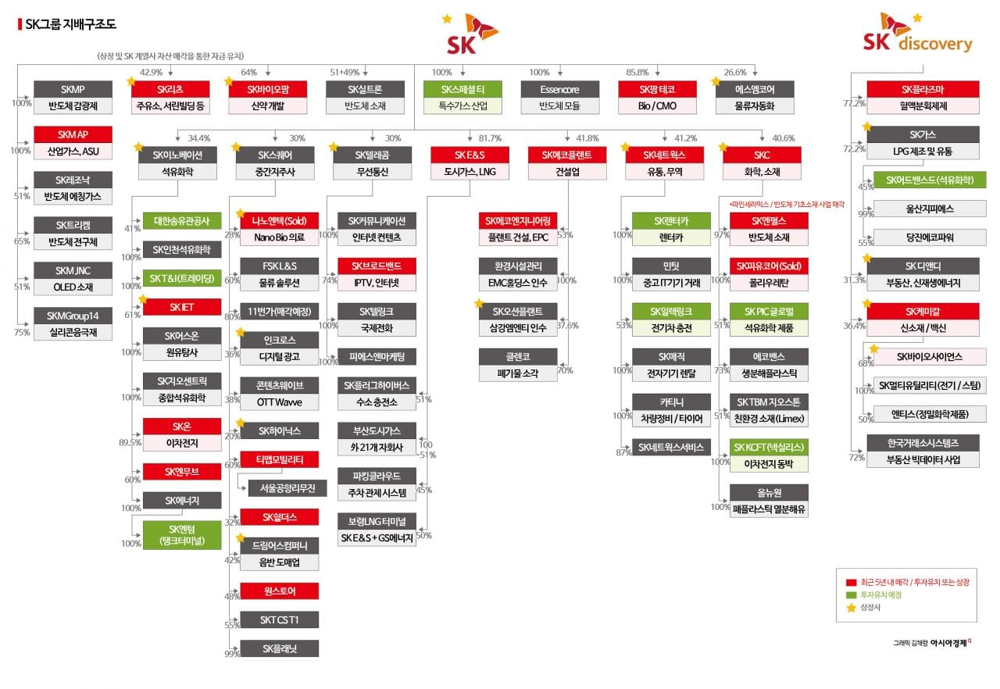

Sk만큼 쪼개기 상장 지독하게 하는 회사도 드뭄
메시지가 아무리 좋아도 메신저가......

Sk만큼 쪼개기 상장 지독하게 하는 회사도 드뭄
메시지가 아무리 좋아도 메신저가......
뭘 이리 세세하게 쪼개놨노 ㄷㄷ
최태원의 주장을 세 가지로 요약하면
(1) 경제공동체 구축 및 노동시장 연결
(2) 지역 교류 활성화
(3) AI·기술 기반 생산성 제고
인데, (3)은 몰라도 (1), (2)가 무슨 의미가 있는지 모르겠네. 한국이 압도적으로 소득 수준이 낮으면 일본으로 건너가서 노동력을 제공할 요인이 생기겠지만 이제는 그렇지도 않고, 한국인 일본어 능통자가 일본 시골로 가서 허드렛일을 할 만큼의 동기와 보상이 도대체 뭐가 있을까? 두 나라 전부 자국의 청년을 소멸 지역으로 못 보내고 있는데, 그냥 나라만 합치면 양국의 청년들이 상대방 국가의 소멸 지역으로 넘어가서 노동을 해줄 것이다?? 논리가 너무 허술해서 오히려 진짜 노림수가 뭔지 의심하게 됨
1번은 그냥 지금 일본 일손부족현상이 심한데 이걸 한국에서 공급해줘서 상호간의 이익을 도모하자는거임 (한국은 취업난 해소, 일본은 인력난 해소)
2번은 내수시장 만들자는 소리인데...근데 내수시장 확대를 내걸기에는 서로 겹치는 영역이 너무 많아서...
한국 취준생들이 굳이 일본을 가려할까? 일본을 개인적으로 좋아하면 모를까, 지금의 일본은 급여적으로나 환경적으로나 크게 메리트가 없는 것 같은데
예전에 대학 졸업하고서 일본 취업 생각해보고 이것저것 뒤져봤는데 외국인으로써 접근가능한 일자리는 호텔 접객처럼 커리어도 안 쌓이고 내다쓰기 쉬운 일자리밖에 없었어ㅋㅋㅋ일손부족 심각하다고 해도 미래가 밝은 직업은 이미 자국민으로 다 차있음ㅋㅋ
최태원은 인사이트 건질 게 없는 양반이라... 무시함. 분석 수고하셨소
솔직히 말하면 부작용 감안하더라도 자회사는 10개 이하로만 둘 수 있게 법 개정 강제해야 한다 생각함.
모회사 15%의 지분으로 자회사 20개~100개씩 운영할 수 있는 경영권을 얻는 행위 자체가 진짜 극혐 중 극혐
플라나리아냐고ㅋㅋㅋㅋ
재벌일가들 대부분 저런 식 아님? 드물것 까지야
그중에 제일 심함
LG 무시함?
엘지가 생각보다 안그래. 보수적이라. 공시만 까봐도 나옴
롯데무시함?
제일 이해가 안가는 부분은 두 나라가 언어가 안 통함. Eu는 지들끼리 언어가 비슷한 부분이라도 있는데 우리는 글자조차 다름. 뭘 어쩌라는건가...
같이 한자 쓰니까 가서 배우랜다
5년안에 AI 속도 개선해서 도라에몽 번역어묵같은거 나온다면..
한일 통합어 한본어로 거듭나면 되는데스~
일본에도 공장짓고 상장하고 싶은건가
삼전닉스가 아무리 10배 올라도 안 사는 이유.jpg
10배가 오를줄 몰랐기 때문에
일본을 무지하게 사랑하는...
온갖 착한척하는건 다 하고 뒤로 나쁜짓도 다함
그래서 다른 회사들 ㅈㄴ 곤란하게함
최태원은 진성 양아치지
나라 재산 결혼으로
불법으고 물려받아 불리고
이혼처리함 skt sk유공 한국이동통신 한국석유
무당 믿고 회사돈으로 옵션질 하다 도이치 증권에 10조짜리 탄맞고 그거 또 책임지기 싫어 회사돈 배임횡령
하다 걸렸는데 동생이 했다고 해서 동생 감옥보냄
그것도 걸려서 감옥 갔다옴
뭐 첩질로 몇조 공중에 날리는건 일도 아니고 회사 쪼개기로 주주손해 주기등은 그냥 장난정도?
그런얘가 니들 일본가라네.....
도이치사태때 엮인건 첨알앗네ㅋㅋ
국가 덕을 제일 많이 본 기업이 선경인데, 국가가 간섭하면 안 된다고 한 게 저 사람이라 뭔가 웃겼음ㅋㅋ
SK랑 SK 디스커버리 저거 설마 지주가 2개인 거임?
이번에 하이닉스 운이 존나게 좋았던게 손자회사라 건들기 힘들었기 때문에 지금 환경에서 저래 올라가 다같이 나눠먹을수 있었던거임 ㅋㅋ 걍 지주사 바로 아래 있었으면 ㅋㅋㅋ
저 지분 구조는 최태원도 해결못함
저게 다 머야 ㄷㄷ
지 가족도 저렇게 다 쪼개야
사지를 저렇게 쪼개야하는데
또 뭔얘기햇길래
쪼개기 조진다고 아가리털던 새끼가 있었는데...
국장 배당금이 존나 짜다고 하지만 그만큼 짤줄은 몰라서 쓴 글은 아닙니다 회장님